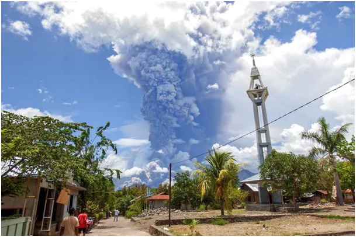
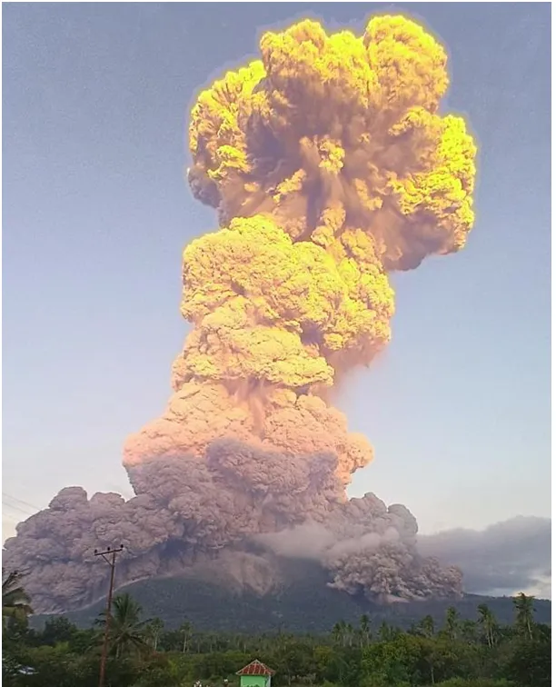
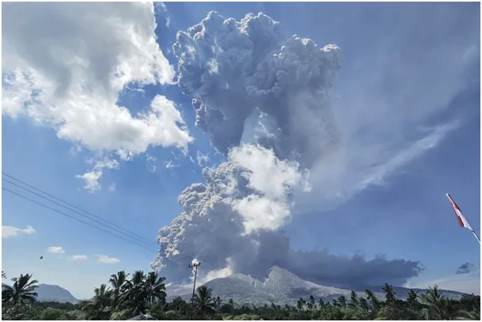

Jakie zaklęcia działają na wulkan Laki-Laki?
Jeden wulkan i wszystkie starania lemingów o niskoemisyjność idą do kosza. CO2 nie ma istotnego wpływu na klimat na Ziemi o czym pisałem np. tu: https://pawelklimczewski.pl/2024/02/23/czy-temperatura-na-ziemi-drgnie-o-ulamek-stopnia-gdy-tradycyjna-produkcja-przemyslowa-i-populacja-wzrosna-o-2000/

Tymczasem na klimat globu mają wpływ popioły wyrzucane przez wulkany, związki siarki inne substancje mają katalityczny wpływ na powstawanie chmur co zmienia bilans termiczny ziemi na niekorzyść. Wiadomo od dawna, że wielkie wybuchy miały wpływ na zmiany pogodowe i klęski głodu na całym świecie. To co widzicie to Lewotobi Laki-Laki na Indonezji. Kolorystka pierwszego zdjęcia wynika z faktu, że zdjęcie jest robione po zachodzie Słońca a komin pyłów sięga końca troposfery, ok. 10 km i górna część erupcji jest ciągle oświetlona przez Słońce.

Żadne magiczne rytuały, jak przyspawanie zakrętek do butelek na wulkany nie pomaga. Tylko Indonezja ma 120 aktywnych wulkanów i leży wzdłuż „Pierścienia Ognia”, łańcucha linii uskoków sejsmicznych otaczających basen Pacyfiku.
Paweł Klimczewski